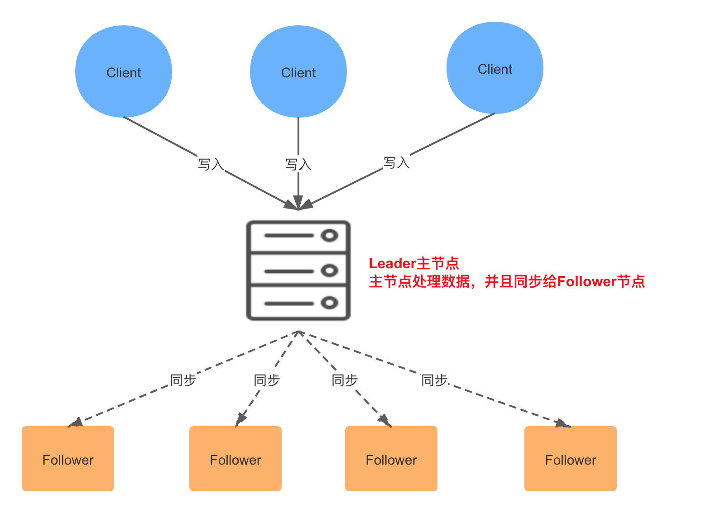
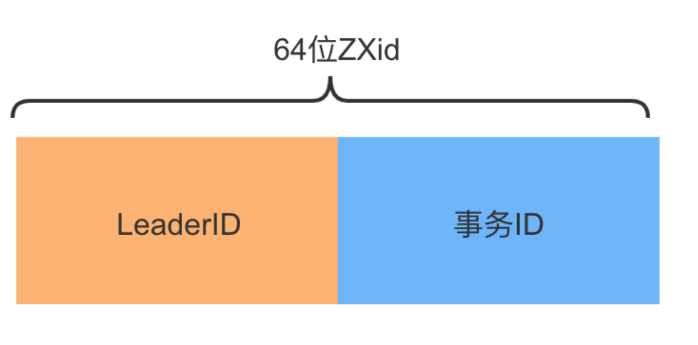
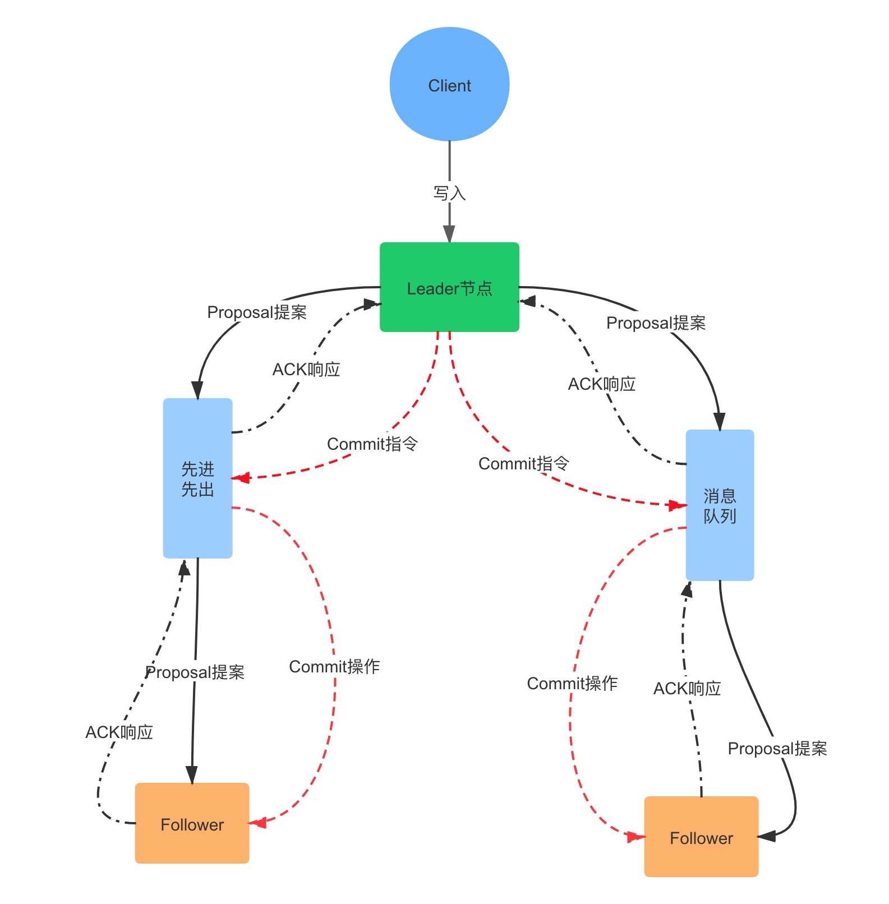
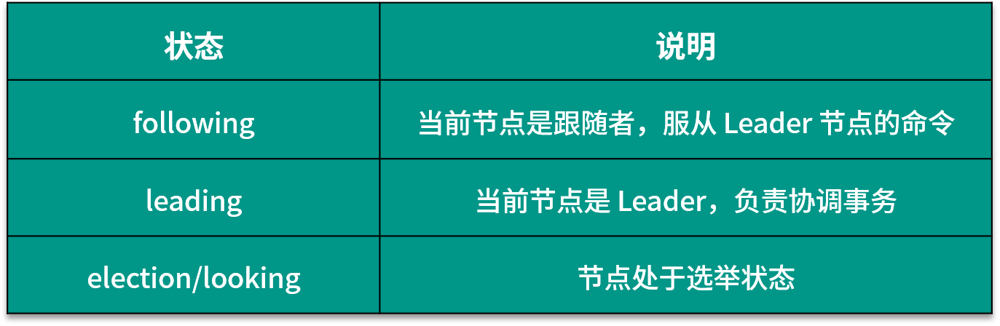
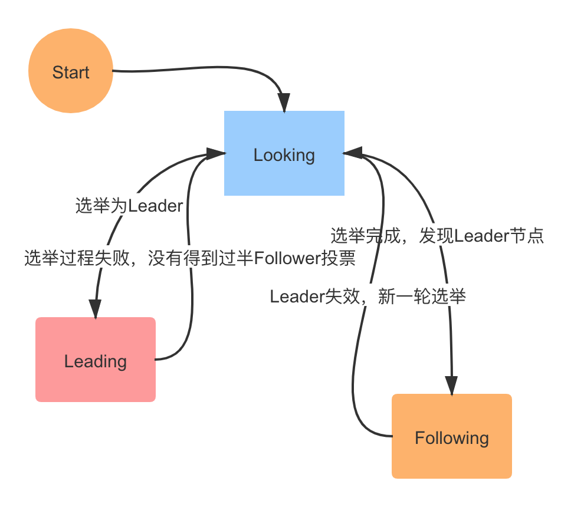

- 00 开篇词：搭建分布式知识体系，挑战高薪 Offer.md.html
- 01 如何证明分布式系统的 CAP 理论？.md.html
- 02 不同数据一致性模型有哪些应用？.md.html
- 03 如何透彻理解 Paxos 算法？.md.html
- 04 ZooKeeper 如何保证数据一致性？.md.html
- 05 共识问题：区块链如何确认记账权？.md.html
- 06 如何准备一线互联网公司面试？.md.html
- 07 分布式事务有哪些解决方案？.md.html
- 08 对比两阶段提交，三阶段协议有哪些改进？.md.html
- 09 MySQL 数据库如何实现 XA 规范？.md.html
- 10 如何在业务中体现 TCC 事务模型？.md.html
- 11 分布式锁有哪些应用场景和实现？.md.html
- 12 如何使用 Redis 快速实现分布式锁？.md.html
- 13 分布式事务考点梳理 + 高频面试题.md.html
- 14 如何理解 RPC 远程服务调用？.md.html
- 15 为什么微服务需要 API 网关？.md.html
- 16 如何实现服务注册与发现？.md.html
- 17 如何实现分布式调用跟踪？.md.html
- 18 分布式下如何实现配置管理？.md.html
- 19 容器化升级对服务有哪些影响？.md.html
- 20 ServiceMesh：服务网格有哪些应用？.md.html
- 21 Dubbo vs Spring Cloud：两大技术栈如何选型？.md.html
- 22 分布式服务考点梳理 + 高频面试题.md.html
- 23 读写分离如何在业务中落地？.md.html
- 24 为什么需要分库分表，如何实现？.md.html
- 25 存储拆分后，如何解决唯一主键问题？.md.html
- 26 分库分表以后，如何实现扩容？.md.html
- 27 NoSQL 数据库有哪些典型应用？.md.html
- 28 ElasticSearch 是如何建立索引的？.md.html
- 29 分布式存储考点梳理 + 高频面试题.md.html
- 30 消息队列有哪些应用场景？.md.html
- 31 集群消费和广播消费有什么区别？.md.html
- 32 业务上需要顺序消费，怎么保证时序性？.md.html
- 33 消息幂等：如何保证消息不被重复消费？.md.html
- 34 高可用：如何实现消息队列的 HA？.md.html
- 35 消息队列选型：Kafka 如何实现高性能？.md.html
- 36 消息队列选型：RocketMQ 适用哪些场景？.md.html
- 37 消息队列考点梳理 + 高频面试题.md.html
- 38 不止业务缓存，分布式系统中还有哪些缓存？.md.html
- 39 如何避免缓存穿透、缓存击穿、缓存雪崩？.md.html
- 40 经典问题：先更新数据库，还是先更新缓存？.md.html
- 41 失效策略：缓存过期都有哪些策略？.md.html
- 42 负载均衡：一致性哈希解决了哪些问题？.md.html
- 43 缓存高可用：缓存如何保证高可用？.md.html
- 44 分布式缓存考点梳理 + 高频面试题.md.html
- 45 从双十一看高可用的保障方式.md.html
- 46 高并发场景下如何实现系统限流？.md.html
- 47 降级和熔断：如何增强服务稳定性？.md.html
- 48 如何选择适合业务的负载均衡策略？.md.html
- 49 线上服务有哪些稳定性指标？.md.html
- 50 分布式下有哪些好用的监控组件？.md.html
- 51 分布式下如何实现统一日志系统？.md.html
- 52 分布式路漫漫，厚积薄发才是王道.md.html
04 ZooKeeper 如何保证数据一致性？
在分布式场景中，ZooKeeper 的应用非常广泛，比如数据发布和订阅、命名服务、配置中心、注册中心、分布式锁等。
ZooKeeper 提供了一个类似于 Linux 文件系统的数据模型，和基于 Watcher 机制的分布式事件通知，这些特性都依赖 ZooKeeper 的高容错数据一致性协议。
那么问题来了，在分布式场景下，ZooKeeper 是如何实现数据一致性的呢？
Zab 一致性协议
ZooKeeper 是通过 Zab 协议来保证分布式事务的最终一致性。Zab（ZooKeeper Atomic Broadcast，ZooKeeper 原子广播协议）支持崩溃恢复，基于该协议，ZooKeeper 实现了一种主备模式的系统架构来保持集群中各个副本之间数据一致性。
系统架构可以参考下面这张图：

在 ZooKeeper 集群中，所有客户端的请求都是写入到 Leader 进程中的，然后，由 Leader 同步到其他节点，称为 Follower。在集群数据同步的过程中，如果出现 Follower 节点崩溃或者 Leader 进程崩溃时，都会通过 Zab 协议来保证数据一致性。
Zab 协议的具体实现可以分为以下两部分：
- 消息广播阶段
Leader 节点接受事务提交，并且将新的 Proposal 请求广播给 Follower 节点，收集各个节点的反馈，决定是否进行 Commit，在这个过程中，也会使用上一课时提到的 Quorum 选举机制。
- 崩溃恢复阶段
如果在同步过程中出现 Leader 节点宕机，会进入崩溃恢复阶段，重新进行 Leader 选举，崩溃恢复阶段还包含数据同步操作，同步集群中最新的数据，保持集群的数据一致性。
整个 ZooKeeper 集群的一致性保证就是在上面两个状态之前切换，当 Leader 服务正常时，就是正常的消息广播模式；当 Leader 不可用时，则进入崩溃恢复模式，崩溃恢复阶段会进行数据同步，完成以后，重新进入消息广播阶段。
Zab 协议中的 Zxid
Zxid 在 ZooKeeper 的一致性流程中非常重要，在详细分析 Zab 协议之前，先来看下 Zxid 的概念。
Zxid 是 Zab 协议的一个事务编号，Zxid 是一个 64 位的数字，其中低 32 位是一个简单的单调递增计数器，针对客户端每一个事务请求，计数器加 1；而高 32 位则代表 Leader 周期年代的编号。
这里 Leader 周期的英文是 epoch，可以理解为当前集群所处的年代或者周期，对比另外一个一致性算法 Raft 中的 Term 概念。在 Raft 中，每一个任期的开始都是一次选举，Raft 算法保证在给定的一个任期最多只有一个领导人。

Zab 协议的实现也类似，每当有一个新的 Leader 选举出现时，就会从这个 Leader 服务器上取出其本地日志中最大事务的 Zxid，并从中读取 epoch 值，然后加 1，以此作为新的周期 ID。总结一下，高 32 位代表了每代 Leader 的唯一性，低 32 位则代表了每代 Leader 中事务的唯一性。
Zab 流程分析
Zab 的具体流程可以拆分为消息广播、崩溃恢复和数据同步三个过程，下面我们分别进行分析。

消息广播
在 ZooKeeper 中所有的事务请求都由 Leader 节点来处理，其他服务器为 Follower，Leader 将客户端的事务请求转换为事务 Proposal，并且将 Proposal 分发给集群中其他所有的 Follower。
完成广播之后，Leader 等待 Follwer 反馈，当有过半数的 Follower 反馈信息后，Leader 将再次向集群内 Follower 广播 Commit 信息，Commit 信息就是确认将之前的 Proposal 提交。
这里的 Commit 可以对比 SQL 中的 COMMIT 操作来理解，MySQL 默认操作模式是 autocommit 自动提交模式，如果你显式地开始一个事务，在每次变更之后都要通过 COMMIT 语句来确认，将更改提交到数据库中。
Leader 节点的写入也是一个两步操作，第一步是广播事务操作，第二步是广播提交操作，其中过半数指的是反馈的节点数 >=N/2+1，N 是全部的 Follower 节点数量。
消息广播的过程描述可以参考下图：

- 客户端的写请求进来之后，Leader 会将写请求包装成 Proposal 事务，并添加一个递增事务 ID，也就是 Zxid，Zxid 是单调递增的，以保证每个消息的先后顺序；
- 广播这个 Proposal 事务，Leader 节点和 Follower 节点是解耦的，通信都会经过一个先进先出的消息队列，Leader 会为每一个 Follower 服务器分配一个单独的 FIFO 队列，然后把 Proposal 放到队列中；
- Follower 节点收到对应的 Proposal 之后会把它持久到磁盘上，当完全写入之后，发一个 ACK 给 Leader；
- 当 Leader 收到超过半数 Follower 机器的 ack 之后，会提交本地机器上的事务，同时开始广播 commit， Follower 收到 commit 之后，完成各自的事务提交。
分析完消息广播，我们再来看一下崩溃恢复。
崩溃恢复
消息广播通过 Quorum 机制，解决了 Follower 节点宕机的情况，但是如果在广播过程中 Leader 节点崩溃呢？
这就需要 Zab 协议支持的崩溃恢复，崩溃恢复可以保证在 Leader 进程崩溃的时候可以重新选出 Leader，并且保证数据的完整性。
崩溃恢复和集群启动时的选举过程是一致的，也就是说，下面的几种情况都会进入崩溃恢复阶段：
- 初始化集群，刚刚启动的时候
- Leader 崩溃，因为故障宕机
- Leader 失去了半数的机器支持，与集群中超过一半的节点断连
崩溃恢复模式将会开启新的一轮选举，选举产生的 Leader 会与过半的 Follower 进行同步，使数据一致，当与过半的机器同步完成后，就退出恢复模式， 然后进入消息广播模式。
Zab 中的节点有三种状态，伴随着的 Zab 不同阶段的转换，节点状态也在变化：  我们通过一个模拟的例子，来了解崩溃恢复阶段，也就是选举的流程。
假设正在运行的集群有五台 Follower 服务器，编号分别是 Server1、Server2、Server3、Server4、Server5，当前 Leader 是 Server2，若某一时刻 Leader 挂了，此时便开始 Leader 选举。
选举过程如下：
1**.各个节点变更状态，变更为** Looking
ZooKeeper 中除了 Leader 和 Follower，还有 Observer 节点，Observer 不参与选举，Leader 挂后，余下的 Follower 节点都会将自己的状态变更为 Looking，然后开始进入 Leader 选举过程。
2**.各个** Server 节点都会发出一个投票，参与选举
在第一次投票中，所有的 Server 都会投自己，然后各自将投票发送给集群中所有机器，在运行期间，每个服务器上的 Zxid 大概率不同。
3**.**集群接收来自各个服务器的投票，开始处理投票和选举
处理投票的过程就是对比 Zxid 的过程，假定 Server3 的 Zxid 最大，Server1 判断 Server3 可以成为 Leader，那么 Server1 就投票给 Server3，判断的依据如下：
首先选举 epoch 最大的
如果 epoch 相等，则选 zxid 最大的
若 epoch 和 zxid 都相等，则选择 server id 最大的，就是配置 zoo.cfg 中的 myid
在选举过程中，如果有节点获得超过半数的投票数，则会成为 Leader 节点，反之则重新投票选举。

4**.选举成功，改变服务器的状态，参考上面这张图的状态变更**
数据同步
崩溃恢复完成选举以后，接下来的工作就是数据同步，在选举过程中，通过投票已经确认 Leader 服务器是最大Zxid 的节点，同步阶段就是利用 Leader 前一阶段获得的最新Proposal历史，同步集群中所有的副本。
上面分析了 Zab 协议的具体流程，接下来我们对比一下 Zab 协议和 Paxos 算法。
Zab 与 Paxos 算法的联系与区别
Paxos 的思想在很多分布式组件中都可以看到，Zab 协议可以认为是基于 Paxos 算法实现的，先来看下两者之间的联系：
- 都存在一个 Leader 进程的角色，负责协调多个 Follower 进程的运行
- 都应用 Quorum 机制，Leader 进程都会等待超过半数的 Follower 做出正确的反馈后，才会将一个提案进行提交
- 在 Zab 协议中，Zxid 中通过 epoch 来代表当前 Leader 周期，在 Paxos 算法中，同样存在这样一个标识，叫做 Ballot Number
两者之间的区别是，Paxos 是理论，Zab 是实践，Paxos 是论文性质的，目的是设计一种通用的分布式一致性算法，而 Zab 协议应用在 ZooKeeper 中，是一个特别设计的崩溃可恢复的原子消息广播算法。
Zab 协议增加了崩溃恢复的功能，当 Leader 服务器不可用，或者已经半数以上节点失去联系时，ZooKeeper 会进入恢复模式选举新的 Leader 服务器，使集群达到一个一致的状态。
总结
这一课时的内容分享了 ZooKeeper 一致性实现，包括 Zab 协议中的 Zxid 结构，Zab 协议具体的流程实现，以及 Zab 和原生 Paxos 算法的区别和联系。
Zab 协议在实际处理中有很多的实现细节，由于篇幅原因，这里只分享了核心的流程，若对该协议感兴趣的话，可以在课后继续找些书籍或者资料来学习：